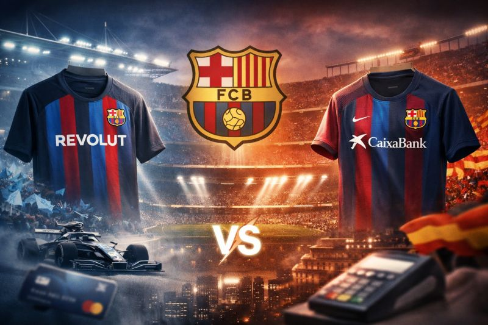

Why the FC Barcelona sponsorship race signals a deeper shift in how banking brands use sports as a distribution channel.

Recent reports suggest that Revolut is in advanced talks to replace CaixaBank as the financial sponsor of FC Barcelona, a partnership that has existed in some form since the 1970s.
If that shift happens, it will be about much more than logo placement. It signals a larger change in where banking distribution is headed and how fintech companies are using sport to accelerate customer growth.
Revolut is not simply entering sports. It is using sports as a distribution layer.
Over the last 12 to 18 months, the company has built a portfolio of sports partnerships and integrations that point to a deliberate acquisition strategy:
This is not just brand building. It is customer acquisition at scale.
The strategy follows a clear funnel-based structure:
Traditional banks sponsor. Revolut activates and converts.
For CaixaBank, this is not just about potentially losing FC Barcelona. It is about losing several layers of strategic relevance:
Historically, incumbent banks have often played defense through long-term deals and legacy associations, with a focus on visibility rather than utility. But the category is shifting.
If CaixaBank, or any traditional bank, wants to remain competitive in this environment, sponsorship needs to evolve into a product-led ecosystem.
That means moving toward ideas such as:
The shift is from "logo on sleeve" to "financial layer of fandom."
Three major developments are likely to follow:
These are markets where financial inclusion and sports passion intersect in powerful ways.
Sports sponsorship is no longer just marketing.
It is infrastructure for growth.
And fintechs such as Revolut appear to understand this better than many legacy players.
The central question is whether incumbents will adapt their model, or continue paying for visibility in a market that is increasingly moving toward conversion.
The Revolut versus CaixaBank story around FC Barcelona reflects a broader transformation in sports business. The future of sponsorship in banking will not be defined only by awareness, but by the ability to turn fandom into financial activity. In that environment, the winners will be the brands that integrate products into the fan journey rather than simply attaching logos to it.